01
Сроки оказания услуг
Ноябрь 2022 года – настоящее время
Представительство компании в социальных сетях, производство контента и работа с блогерами, популярными сообществами.
Ноябрь 2022 года – настоящее время
На протяжении 2,5 лет команда NUTS обеспечивает комплексное продвижение во всех социальных сетях. Мы начали с разработки стратегии продвижения в соцсетях, затем готовили контент-планы, писали тексты и разрабатывали макеты в соцсети, а также занимались моушн-анимацией и разработкой сценариев для съёмки видео. А иногда даже придумывали заголовки для рекламных кампаний.
Кроме того, запускали и проводили рекламные кампании, продвигали Дзен – писали статьи, настраивали рекламу.
В течение нашего сотрудничества DOGMA из регионального девелопера превратилась в федерального, изменились и наши обязанности. На данный момент мы продолжаем помогать заказчику с разработкой креативных макетов и анимаций, а также настраиваем рекламу и следим за комментариями в соцсетях.
А еще NUTS забрал на себя большой пласт работы с блогерами и популярными пабликами. Ежемесячно с нашей помощью в сообществах по всей стране выпускаются десятки постов о деятельности компании, собирает отчетность, маркируются материалы, ведется постоянная работа по переговорам с блогерами, их поиск, согласование материалов.
Ежедневно на протяжении около двух лет наша команда занималась подготовкой и выпуском новостей в соцсетях – новости выходили каждый день, минимум по 7 в неделю. На проекте работали дизайнеры, копирайтеры, контент-менеджеры, моушн-дизайнеры.
Разрабатывали макеты для соцсетей, писали новости для публикаций в соцсетях.
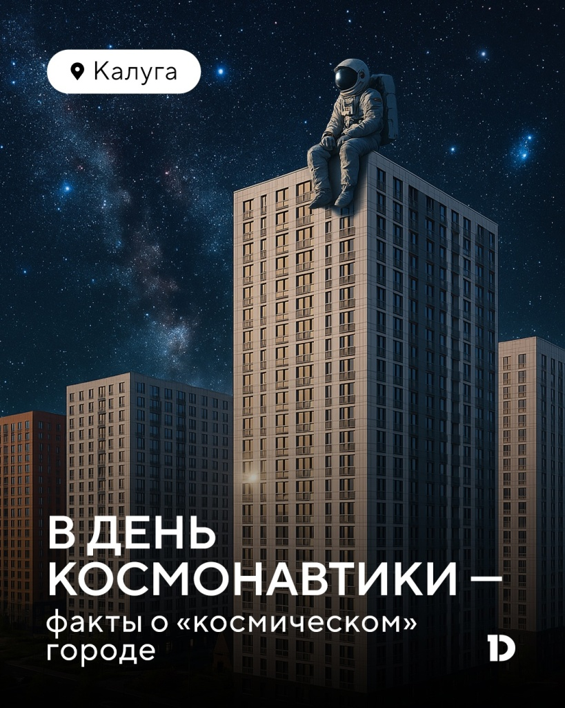
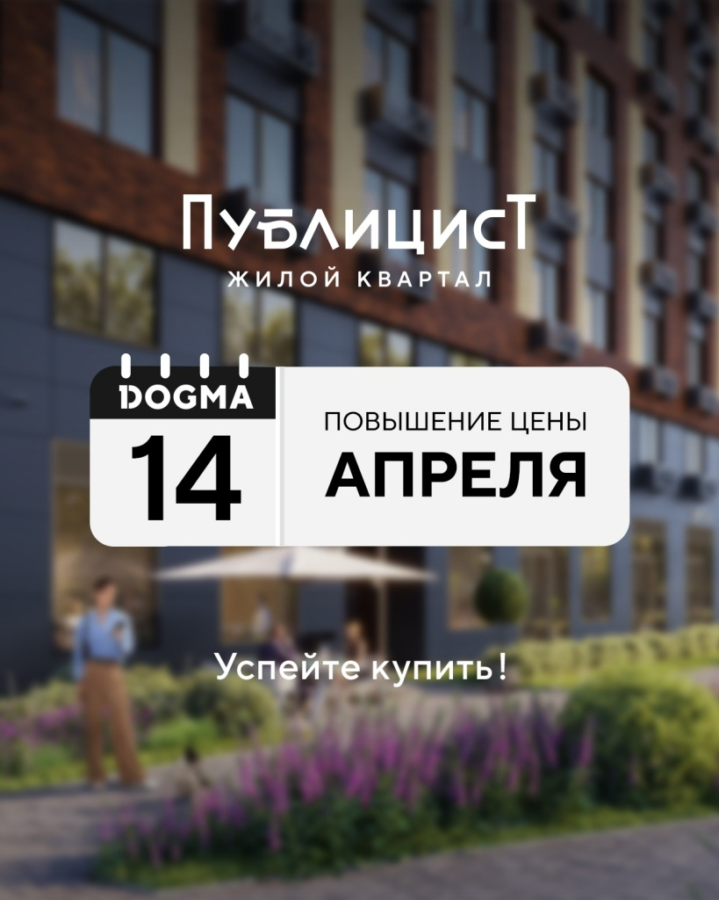
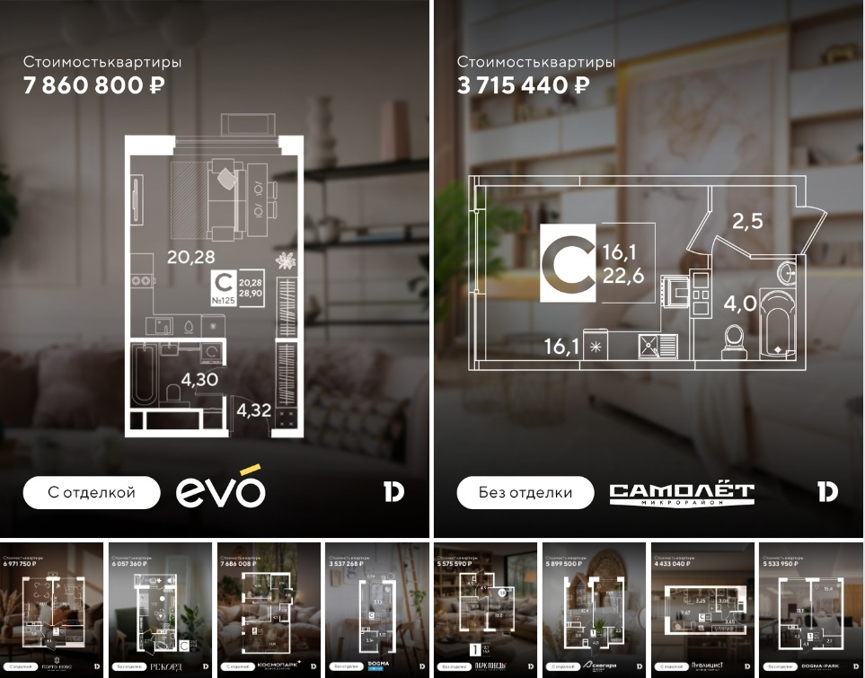
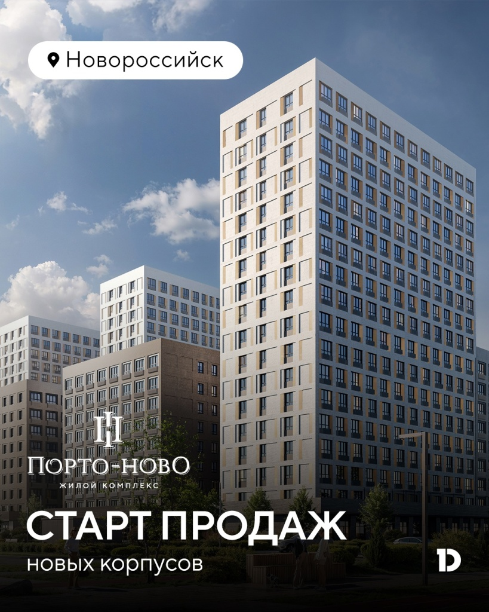
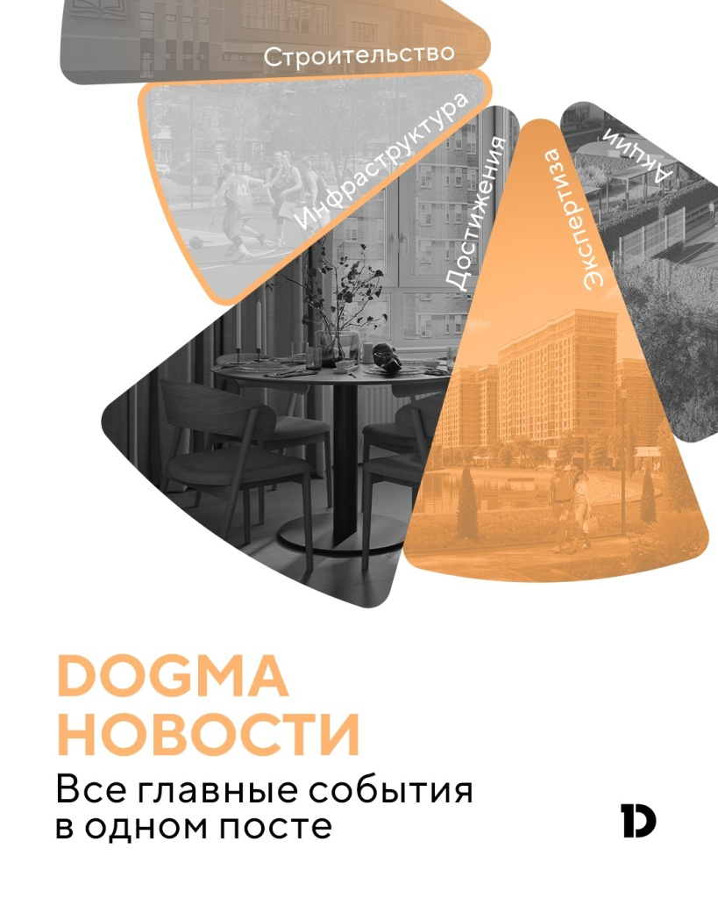
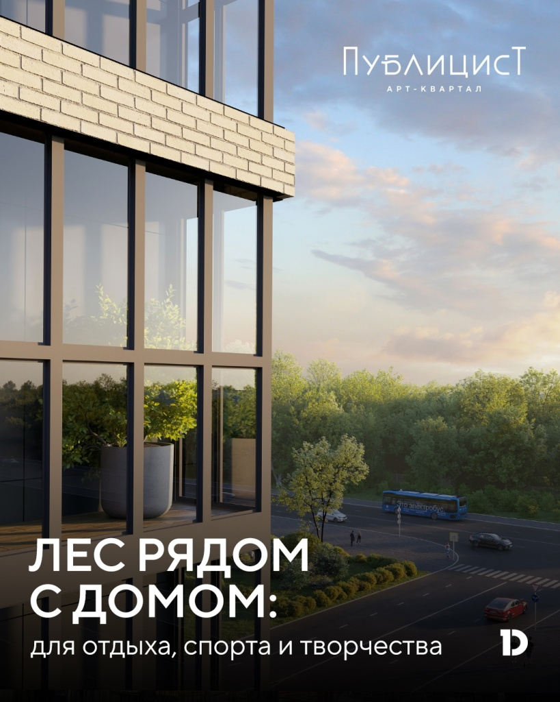
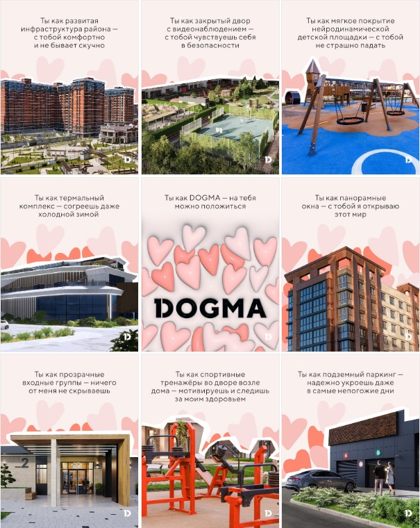
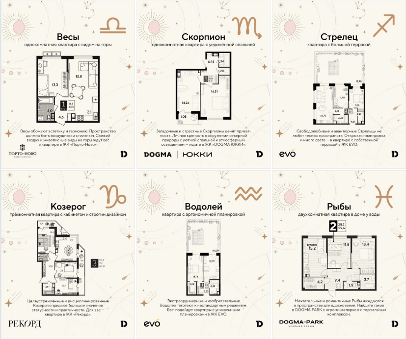
Разрабатывали анимационные ролики в рамках акций, проходивших в компании. От креативных аватарок и кружочков в Телеграм до полноценных анимационных роликов в стиле моушн.
Наши менеджеры по работе с комментариями и запросами от пользователей в директ, личные сообщения ежедневно на связи: принимают вопросы, отвечают на них, уточняют важные моменты у сотрудников на стороне клиента и возвращаются с обратной связью. Ежедневно в директ по всех соцсетях может поступать от 20 до 100 сообщений, на которые надо реагировать. Мы качественно взаимодействуем с подписчиками сообщества и оперативно реагируем на различные ситуации.
С июня по ноябрь 2023 года активно занимались продвижением сообщества DOGMA в Дзен. На тот момент сообщество не было развито, мы добились успехов по наращиванию просмотров статей и подписчиков сообщества.
Мы работали по двум направлениям – качественный контент, который учитывал потребности пользователей Дзена, плюс реклама статей.
Написание статей для Дзена требует особых инструкций, статьи должны быть полезными и интересными, не рекламными. Так мы написали статью про историю небоскребов, раскрыли секреты зеленого дома и поделились инструкцией, как обновить квартиру без ремонта.
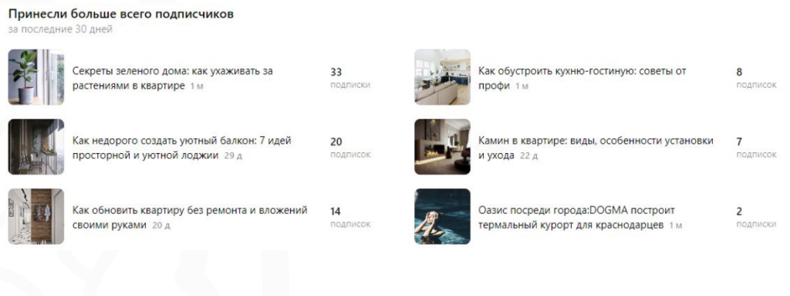
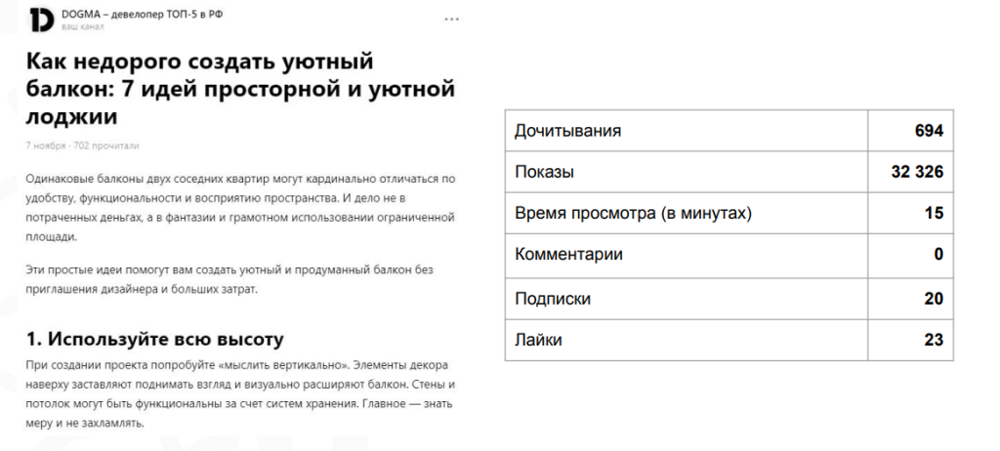
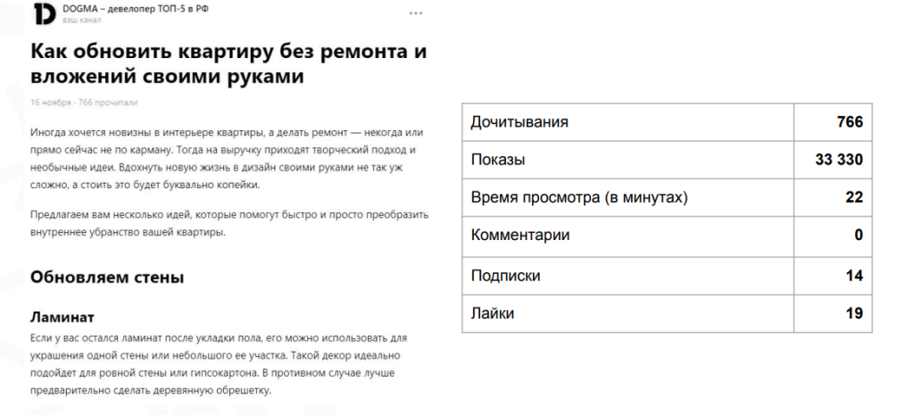
Ежемесячно подбираем блогеров под запросы клиента и сотрудничаем с ними. Работаем со всеми вариантами интеграции: пост, видео-обзор, короткий ролик или сторис. Организуем взаимодействие на всех этапах – от поиска блогера с любым местом жительства до маркировки рекламной публикации и отправки отчетности в ОРД и сбора статистики.
Эту услугу можно заказать у нас отдельно, подробнее читайте в статье.
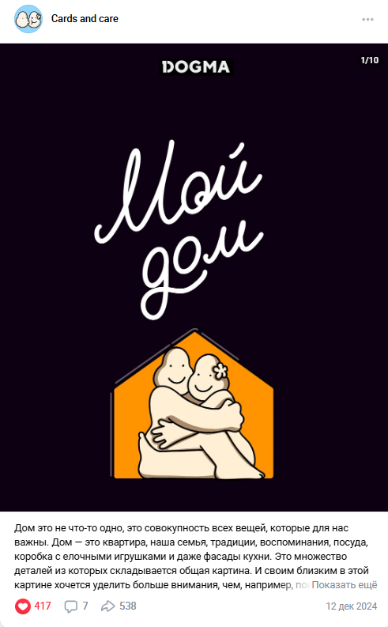
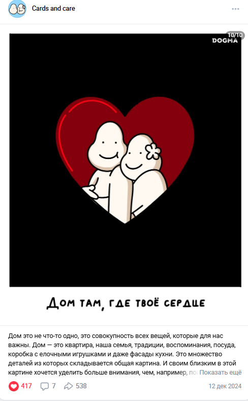
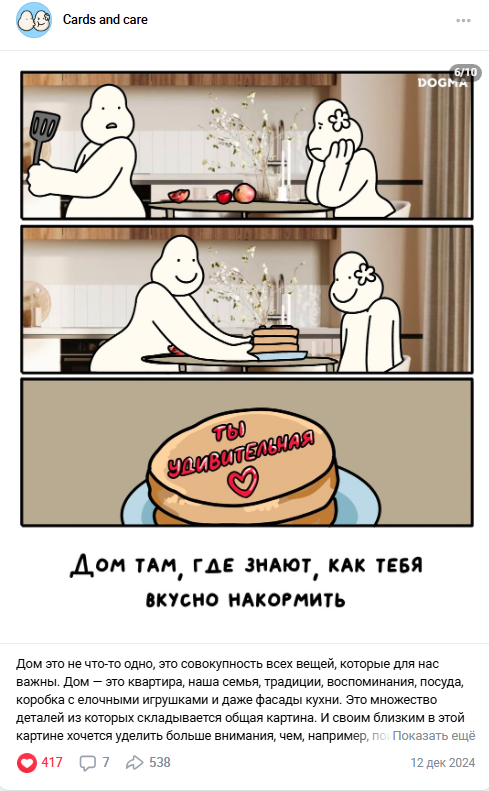
Ежемесячно работаем с популярными сообществами по всей стране – от городов Сибири до Центральной России. Готовим рекламные публикации к выходу, маркируем рекламу, ведем переговоры с представителями сообществ, собираем статистику и отправляем отчетность.
Подробнее об этой услуге написали здесь.
Настраиваем и ведем рекламные кампании Вконтакте, в Дзен, а также в Яндекс Директ для привлечения подписчиков в Телеграм-канал. Мы написали отдельный кейс про рекламу для DOGMA и про наши успехи – почитайте.
Выстроили долгосрочные крепкие отношения с клиентом и работали как инхаус-агентство на протяжении 2,5 лет. Повысили узнаваемость бренда, охваты и увеличили количество подписчиков.
Благодаря вашим усилиям, тысячи людей узнали о нашей компании, мы ежедневно расширяем присутствие в цифровом пространстве и устанавливаем более тесные связи с нашей целевой аудиторией. С радостью продолжаем сотрудничать и достигать новых высот вместе!